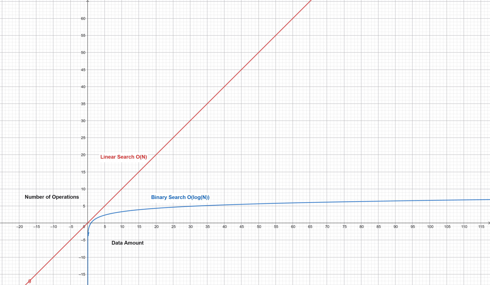

<!DOCTYPE html>

<head>
    <title>Binary Search</title>
    <link rel="stylesheet" href="Style.css">
    <link href="https://fonts.googleapis.com/css2?family=Poppins:wght@400;600;800&display=swap" rel="stylesheet">    
    <link href="https://fonts.googleapis.com/css2?family=Asap+Sharp:ital,wght@0,100..900;1,100..900&family=Rancho&family=Roboto:ital,wght@0,100..900;1,100..900&family=VT323&display=swap" rel="stylesheet">
    
</head>
<body>
    
        
    <div id="basicallyBody">
        <section id="start">
            <div id="start-content">
                <h1>Binary Search</h1>
                <div id="start-enter-button">
                    <a href="#explanation">
                        Click here to start learning
                        <div id="lottieAnim">
                            <script type="module" src="https://unpkg.com/@lottiefiles/dotlottie-wc@latest/dist/dotlottie-wc.js"></script>
                            <dotlottie-wc src="https://lottie.host/d700508a-823e-4070-8089-dc0a08df1420/W5ry4aFqyL.lottie
        " autoplay loop></dotlottie-wc>
                        </div>
                    </a>
                </div>
            </div>
        </section>

        
        <ul id="navbar">
            <li><a href="index.html">Home</a></li>
            <li><a href=#explanation>Explanation</a></li>
            <li><a href=#animation-section>Demo</a></li>
            <li><a href=#code>Code</a></li>
            <li><a href=#efficiency>Efficiency</a></li>
            <li><a href=#quiz>Quiz</a></li>
            <button id="NightMode" onclick="darkControl()" style="padding: 0 0; width: 55px; height: 55px; border-radius: 25px;"></button>
        </ul>
                
            
        <section id="explanation" class="explanation">
            <div id="explanation-pin" class="explanation-pin">
            <br><p>Imagine this...</p>
            <p>You are in a hurry, and want to get your lunchbox ready for school...</p>
            <p>Unfortunately, your lunchbox can only fit things that are smaller than it. You have LOTS of things you could take with you, but you can only take one. Obviously since you're hungry you want the biggest possible snack.</p>
            <p>Now, you certainly <i>could</i> try fitting each possible snack, and then comparing them to find the biggest, but you would be late for school, and your teacher will probably scold you.</p>
            <p>What would you do?</p>
            <br>
            <p>The best option is actually something we call in programming a <strong>binary search</strong>.</p>
            <p>First, we sort all the snacks by size. It doesn't really matter whether it is ascending or descending, but let's go with ascending for this analogy.</p>
            <p>Then we find the middle snack (median), and try fitting it in the lunchbox. If it fits great, then the target, is somewhere in the snacks starting from the median to the end. This means we can put away anything that was smaller than the median. <i>psst.. you don't have to throw it away. just put it in a fridge</i></p>
            <p>But what if it doesn't fit? Well, then we do the opposite, and put away the median and everything that was bigger (till the end).</p>
            <p>Now we repeat this process, until we have only one possible snack left.</p>
            <br>
            <p>Right now, you probably don't really get the concept perfectly, which is why I have this little animation to make things a little bit easier. </p>
            </div>
        </section>

        <section id="animation-section1">
        <div id="myLottieAnim">
            <dotlottie-wc
                src="https://lottie.host/c50badfc-84c3-467a-a36e-affecf494cf4/TCX5VUjZJI.lottie"
                autoplay
                loop>
            </dotlottie-wc>
        </div>
        </section>

        <section id="animation-section">
            <div class="binary-demo">
                <h2>Let's try it!</h2>
                <p class="demo-subtitle">
                    Find the largest number less than or equal to 6.
                </p>

                <div id="demo-array" class="demo-array"></div>

                <p id="demo-step" aria-live="polite">
                    Start with the middle element.
                </p>

                <div class="demo-controls">
                    <button id="demo-prev" disabled>Previous</button>
                    <button id="demo-next">Next step</button>
                    <button id="demo-reset">Restart</button>
                </div>

                <p id="demo-progress">Step 1 of 5</p>
            </div>
        </section>

        <section class="explanation" id="code">
            <div id="explanation-pin2" class="explanation-pin">
                <h1>Code</h1>
                <p>Now you probably want to know how to do this in code</p>
                <p>After all, that is why you're here in the first place.</p>
                <p>For this demo, we will use C++ as the language, but it works in basically any other language as well, since it is a logical concept and not a C++ specific thing.</p>
                <p>First we have to make our variables:</p>
                <pre>array<int, 8> arr = {1,3,5,7,9,11,13, 15}; <br>int target = 6; <i>// We aim to get the highest number lower than or equal to this "target"</i><br>int l = 0; <i>// This is the leftmost possible element (the start element)</i><br>int r = arr.size()-1; <i>// This is the rightmost possible element (last element in array). We decrement it by 1, because the index is from 0 to the size - 1</i><br>int m; <i>// This will later be used as the median</i><br>int ans = -1; <i>// This is the answer. It is set at -1 so that if it doesn't change we can tell there was no possible element in the array</i></pre>
                <p>Now, that we have our variables ready, it's time to start the actual code.</p>
                <p>We will be using a while loop, since the while loop's purpose, is to keep repeating the code until a condition becomes true. In this case, we will NOT loop till there is only one element left, because that would not be ideal. Logically though, it still is the same</p>
                <p>That is why we will use the condition l <= r, since l should never be more than r normally, and then we are finished, we simply change l's value to be higher, or decrease r's value.</p>
                <p>Let's take a look:</p>
                <pre>
    while (l <= r){
        m = (l + r) / 2; <i>// In the first iteration, l = 0, r = 7, m = 7/2 = 3 (since c++ rounds down for integers)</i>
        if (arr[m] > target){
            r = m - 1; <i>// This changes the end of the list to be right before the median. Why? Because the median was bigger than the target, therfore the answer is in the first half.</i>
        } else{
            ans = arr[m];
            l = m + 1; <i> // Same idea, but the other way. This time the median was less than or equal to the target, which means, it must be the median or in the other half.</i>
        }
    }
    </pre>
                <p>Now, that the logic is fine, we can now output the answer.</p>
                <p>First though, we have to check if the answer is still -1. If so, then the search failed to find an answer. If the answer is not -1 though, then we should just output the answer.</p>
                <br><p>Let's write the last part of the code then:</p>
                <pre>
    if (ans == -1) { // No answer found
        cout << "No answer found in the list";
    } else {
        cout << ans;
    }
                </pre>

                <p><strong>GREAT!!</strong> Now, we have the whole code. If we try it out it will output 5, which is indeed the highest number in the array that is less than or equal to 6.</p>
                <p>If you want to run it yourself here is the code, with all the extra things that C++ needs.</p>
                <pre>
    #include &lt;iostream>
    #include &lt;array>

    using namespace std;


    int main() {
        array<int, 8> arr = {1,3,5,7,9,11,13, 15}; 
        int target = 6;
        int l = 0; 
        int r = arr.size() - 1; 
        int m; 
        int ans = -1; 

        while (l <= r){
            m = (l + r) / 2; 
            if (arr[m] > target){
                r = m - 1;
            } else{
                ans = arr[m];
                l = m + 1; 
            }
        }

        if (ans == -1) { // No answer found
            cout << "No answer found in the list";
        } else {
            cout << ans;
        }
        
                    
    }
                </pre>
                <pre>>> 5 </pre>
            </div>

        </section>

        <section class="explanation" id="codeExplanation">
            <div class="explanation-pin">
                <p>Now, let's see perhaps where else we can use it.</p>
                <p>First of all, you must remember that the condition we used was just temporary, and is totally replacable. For example, the logic would hold if you wanted to find the smallest number bigger than a target.</p>
                <p>You could even apply the logic to alphabetical order. For example, you have words from a dictionary, and want to find the last one of them that will occur before the word you chose, though that would probably need a few more lines of code, to evaluate the alphabetical order and all that, but it still is possible.</p>
                <p>Secondly, even if you can't think of a practical usecase from the top of your mind RIGHT now, that doesn't make learning it useless. In fact, this method is way more efficient than normal searching, though most of the time, you won't need to write the syntax yourself, since many languages have builtin functions for it. But still, learningn the logic behind it really helps tell you when you need it.</p>
                <p>Also, this will be REALLY useful, if you plan to enter any competitive programming competitions, since many challenges will need it, and sometimes even it will be in job interviews, depending obviously on the job role.</p>
                <p>But why do we say it is efficient? And by how much?</p>
                <p>Well, it is efficient, because we need to do drastically less iterations with this method than we would using regualar search, as for the speed difference, we will discuss it in the next section.</p>
            </div>
        </section>

        <section class="explanation" id="efficiency">
            <div class="explanation-pin">
                <h1>Efficiency</h1>
                <p>As we said before, binary search is highly efficient. Let's see why mathematically.</p>
                <div class="table">
                    <table>
                        <tr>
                            <td></td>
                            <td>Linear Search</td>
                            <td>Binary Search</td>
                        </tr>
                        <tr>
                            <td>Time Complexity:</td>
                            <td>O(N)</td>
                            <td>O(log(N))</td>
                        </tr>
                        <tr>
                            <td>Auxiliary Space:</td>
                            <td>O(1)</td>
                            <td>O(1)</td>
                        </tr>
                        <tr>
                            <td>Best Case Scenario Complexity:</td>
                            <td>O(1)</td>
                            <td>O(1)</td>
                        </tr>
                        <tr>
                            <td>Best Case Scenario:</td>
                            <td>Target is first element</td>
                            <td>Target is middle element</td>
                        </tr>
                    </table>
                </div>
                <br>
                <p>Now it is actually totally fine for you to not really understand all of this. But don't worry I'll explain everything for you.</p>
                <p>Firstly, we have time complexity. The N refers to the number of elements. That means that linear searching will need N iterations. If N is 5 it will need 5 iterations. If it finds it in less, then that is great, but it doesn't change the complexity.</p>
                <p>What about O(log(n))? log(n) is basically is the opposite of exponenation. This means log<sub>2</sub>(8) = 3. Why? Because 2<sup>3</sup> = 8. What if you want to calculate it mentally? You just keep dividing, basically. So 8 / 2 = 4, 4 / 2 = 2, 2 / 2 = 1, log<sub>2</sub> = 3 </p>
                <p>Now if we take a look and compare between O(N), and O(log(N)) when N is 8 for example, we find linear search is O(8), and binary search is O(3)</p>
                <p>Obviously the speed difference will increase drastically as time passes, which is why we made this simple graph to explain it.</p>
                
            </div>
        </section>

        <section class="explanation" id="quiz">
            <div class="explanation-pin">
                <h1>Did you get it?</h1>
                <p>Here we will start writing the code ourselves. Since, it isn't AI powered or anything, you will have to write the code, with the exact variables I write.</p>
                <p>You don't need to write the C++ specific stuff though, because the main goal is just the logic.</p>
                <p>There will also be questions about the information in the webpage. Good Luck!</p>

                <p>Let's get started then!</p>
                <div class="question">
                    <p class="question-text" id="question-text">How many variables will you need to initialise?</p>
                    <input name="answer" id="answer" type="text" placeholder="Enter the number and press enter">
                    <button id="btn" hidden onclick=answer()></button>
                    <br>
                    <h3 id="result"></h3>
                    <h3 id="feedback"></h3>
                    <button id="Next" onclick=incrementQ()>Next</button>
                </div>
                
            </div>
        </section>
    </div>
    
    <script src="script.js"></script>
</body>
